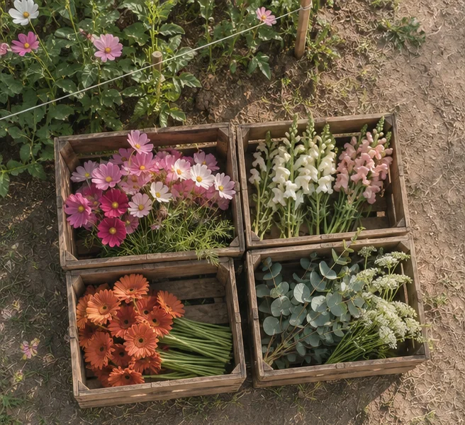

Cành cắt
gần nhà.
Quầy hoa theo mùa cho người thích tự cắm. Chọn cành theo độ dài và dáng hoa, rồi lưu một khung giờ lấy.
Mở kệ cànhHai buổi mở quầy
Lịch mẫu mỗi tuần
- Thứ Sáu
- 08:00–12:00
- Cành mới cắt, phù hợp cắm bình cuối tuần.
- Thứ Bảy
- 08:00–12:00
- Có thêm cành lá để phối và bó tại bàn.
Một bình, hai dáng cành
Thử một nhóm đồng tiền làm điểm nhìn và vài nhánh lá bạc đặt thấp ở miệng bình. Cắt cành thành hai độ dài để hoa hướng ra ngoài mà lá vẫn che được gốc.
Xem đồng tiền cam đất